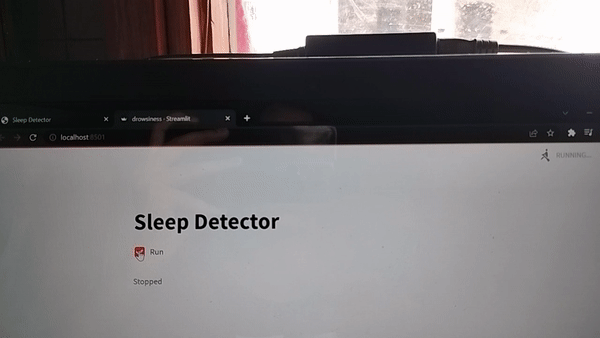

How it works
The Sleep Detector works on OpenCV which detects the faces and then uses a deep learning model which determines whether the user's eyes are opened or closed and to what extent. The steps the detector uses are:
Step-1
Take the input as a live videostream
Step-2
Detect the face and create landmarks and/or regions of interest
Step-3
Detect the left and the right eye respectively and determine whether they are opened or closed or partially opened.

Step-4
Calculate the sleep score based on the movements and predict whether the person is sleeping or not
Step-5
Ring the Alarm if the user is sleeping to wake them up!